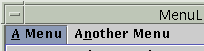
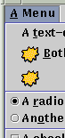
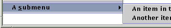
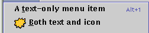
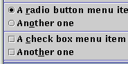
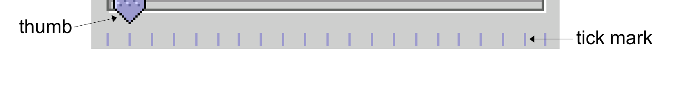
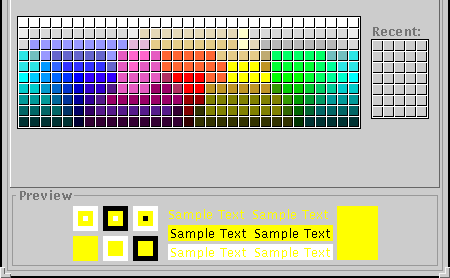
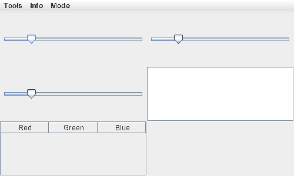
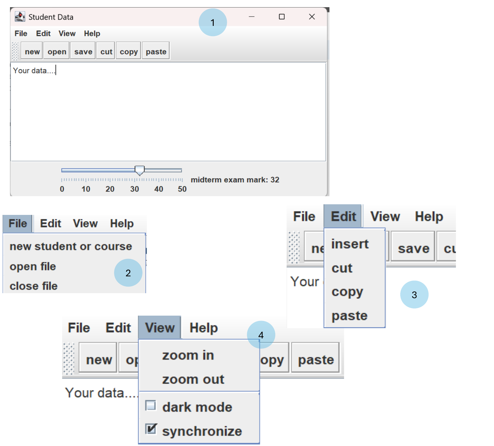
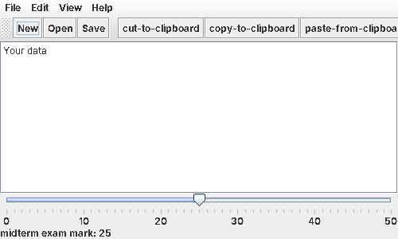

CS254 Visual Programming · Lecture 9 + Lab 7
Other Components
Menus, mnemonics and accelerators, JSlider, JEditorPane, scrolling, JFileChooser, JColorChooser and JDialog. Every slide of Lecture 9 – Other components (21 slides) in order with all code, then Lab 7 (Part 2), the Student Data app with menus, a toolbar, an editor, a slider and dark mode, with a working mock-up and a full solution.
Slides 1–6
Menus
Other Components 1
JMenu 2
- Allows for performing actions without cluttering GUI
- Can be used for
JFrameorJAppletobjects - Contained by menu bar
JMenuBar(requiressetJMenuBar)
- Comprised of menu items
JMenuItemJCheckBoxMenuItemJRadioButtonMenuItem
- When menu is clicked, expands to show menu items
JMenuItemcan be aJMenuto have a sub-menuaddActionListenerfor each menu item
JMenuBar 3
a drop-down menu of commands

public JMenuBar()public void add(JMenu menu)
Usage: in JFrame, the following method exists:
public void setJMenuBar(JMenuBar bar)
JMenu 4
a sub-menu of commands with a JMenuBar
public JMenu(String text)public void add(JMenuItem item)public void addSeparator()public void setMnemonic(int key)


JMenuItem 5
an entry within a JMenu that can be clicked to execute a command

public JMenuItem(String text)public JMenuItem(String text, Icon icon)public JMenuItem(String text, int mnemonic)public void setAccelerator(KeyStroke ks)public void setEnabled(boolean b)public void setMnemonic(int mnemonic)public void addActionListener(ActionListener al)
J(CheckBox|RadioButton)MenuItem 6
a JMenuItem with a check box or radio circle

public J_____MenuItem(String text)public J_____MenuItem(String text, boolean selected)public J_____MenuItem(String text, Icon icon)public J_____MenuItem(String text, Icon icon, boolean selected)public void addActionListener(ActionListener al)public boolean isSelected()public void setSelected(boolean b)
Recall: in a ButtonGroup, the following method exists:
public void add(AbstractButton button)- These two classes extend
AbstractButton.
Slides 7–9
Mnemonics, accelerators, JSlider
Mnemonics 7
- mnemonic: A context-sensitive menu hotkey assigned to a specific button or other graphical component.
- Usually visible as an underlined key, activated by pressing Alt+key.
- Only works when input focus is on the appropriate component.
- usage: call
setMnemonic(char)method- Menu items also have a constructor that takes a mnemonic.
myQuitButton.setMnemonic('Q');
JMenuItem myNewItem = new JMenuItem("New", 'N');
// or: myNewItem.setMnemonic('N');Accelerators 8
- accelerator: A global hotkey that performs an action (ex: Alt-X to exit the program) even on components that aren't in focus / visible.
- Can be run at any time in the application.
- Can optionally include modifiers like Shift, Alt.
- To create an accelerator:
- Call the static
getKeyStrokefactory method of theKeyStrokeclass. - Pass its result to the
setAcceleratormethod of the component.
- Call the static
menuItem.setAccelerator(
KeyStroke.getKeyStroke('T',KeyEvent.ALT_MASK));JSlider 9
- Enable users to select from range of integer values
- Several features
- Tick marks (major and minor)
- Snap-to ticks
- Orientation (horizontal and vertical)
paintdraws on subclasses ofJFrameandJappletpaintComponentdraws on subclasses ofJComponent

Added · Code for a slider with ticks
JSlider slider = new JSlider(JSlider.HORIZONTAL, 0, 50, 25); // orientation, min, max, value
slider.setMajorTickSpacing(10);
slider.setMinorTickSpacing(1);
slider.setPaintTicks(true);
slider.setPaintLabels(true);
slider.setSnapToTicks(true);
slider.addChangeListener(e -> label.setText("value: " + slider.getValue()));Try it: a menu with mnemonics, an accelerator and a slider
AddedClick inside the window first. Then try Alt+F (mnemonic: opens File), N or O while it's open, and Ctrl+S (accelerator: works with the menu closed).
Slides 10–17
JEditorPane and scrolling
JEditorPane 10–11
- Used to display text in a graphical component
- Suited for displaying text read from files
JEditorPanesupplies the basic functions of a text editor automatically.- You can place the cursor, insert or delete text and also copy (using CNTR-C and CNTRV).
| Method | What it does | Slide |
|---|---|---|
JEditorPane() | Creates an empty editor pane. | 10 |
void read(Reader myReader, Object description) | reads the text supplied by myReader and displays it in the editor area. In the second argument description further information on the type of text can be given; we do not use this here, i.e. we set description = null. | 10 |
getText() | returns the text currently displayed in the editor area as one string, including the line-end characters. | 10 |
setText(String text) | Sets the text content of the editor pane. | 11 |
getText(String text) | Gets the text content of the editor pane. | 11 |
setContentType(String type) | Sets the content type of the editor pane (e.g., "text/plain," "text/html," "text/rtf"). | 11 |
getContentType() | Returns the content type of the editor pane. | 11 |
setEditable(boolean editable) | Sets whether the editor pane is editable or not. | 11 |
getSelectedText() | Returns the currently selected text. | 11 |
JEditorPane example 12
import java.awt.*;
import javax.swing.*;
public class JEditorPaneSetFontExample {
public static void main(String[] args)
{
// Create a JFrame
JFrame frame = new JFrame("JEditorPane setFont() Example");
frame.setDefaultCloseOperation(JFrame.EXIT_ON_CLOSE);
frame.setSize(400, 300);
// Create a JEditorPane
JEditorPane editorPane = new JEditorPane();
// Set content type to plain text
editorPane.setContentType("text/plain");
// Set text content
editorPane.setText("Test For EditorPane");
// Create a custom font
Font customFont = new Font("Serif", Font.BOLD, 16);
// Set the font for the editor pane
editorPane.setFont(customFont);
// Add the JEditorPane to the frame
frame.add(editorPane);
// Make the frame visible
frame.setVisible(true);
}
}JEditorPane example 2 13
import SimpleFrame.SimpleFrame;
import java.io.*;
import javax.swing.*;
import java.awt.*;
public class TextDisplayFrame extends SimpleFrame
{
private JEditorPane textDisplayPane;
public TextDisplayFrame(String filename)
{
textDisplayPane = new JEditorPane();
this.getContentPane().add(textDisplayPane,BorderLayout.CENTER);
this.setSize(200,160);
File readfile = new File(filename);
try{
FileReader fr = new FileReader(readfile);
textDisplayPane.read(fr,null);
}catch(IOException e){
System.out.println("Problems opening or reading "+readfile.getPath());
}
}
}
public class TextDisplayDriver
{
// Adujust paths if necessary!!
private static String path = "./its/TestData/";
private static String fileName = "testtext1.txt";
public static void main(String[] args)
{
TextDisplayFrame TAF = new TextDisplayFrame(path+fileName);
TAF.showIt("Text Display");
}
}JEditorPane example 3 14
import java.io.*;
import java.awt.event.*;
import javax.swing.*;
public class JEditorPaneSave implements ActionListener {
JFrame myFrame = null;
JEditorPane myPane = null;
public static void main(String[] a) {
(new JEditorPaneSave()).test();
}
private void test() {
myFrame = new JFrame("JEditorPane Save Test");
myFrame.setDefaultCloseOperation(JFrame.EXIT_ON_CLOSE);
myFrame.setSize(300,200);
myPane = new JEditorPane();
myPane.setContentType("text/plain");
myPane.setText(
"JEditorPane is a text component to edit various kinds of"
+" content.\n\nThis component uses implementations of the"
+" EditorKit to accomplish its behavior.");
myFrame.setContentPane(myPane);
JMenuBar myBar = new JMenuBar();
JMenu myMenu = getFileMenu();
myBar.add(myMenu);
myFrame.setJMenuBar(myBar);
myFrame.setVisible(true);
}
private JMenu getFileMenu() {
JMenu myMenu = new JMenu("File");
JMenuItem myItem = new JMenuItem("Open");
myItem.addActionListener(this);
myMenu.add(myItem);
myItem = new JMenuItem("Save");
myItem.addActionListener(this);
myMenu.add(myItem);
return myMenu;
}
public void actionPerformed(ActionEvent e) {
String cmd = e.getActionCommand();
try {
if (cmd.equals("Open")) {
FileReader in = new FileReader("JEditorPane.txt");
char[] buffer = new char[1024];
int n = in.read(buffer);
String text = new String(buffer, 0, n);
myPane.setText(text);
in.close();
} else if (cmd.equals("Save")) {
FileWriter out = new FileWriter("JEditorPane.txt");
out.write(myPane.getText());
out.close();
}
} catch (Exception f) {
f.printStackTrace();
}
}
}Scrolling 15
- To display long texts or large drawings that do not fit into the window.
- Scrolling is implemented by class
JScrollPane - The scroll bars are on the right and at the bottom by default
- The part where the component is displayed is called viewport.
- If the whole component fits into the viewport the scroll bars disappear.
setHorizontalScrollBarPolicy(int policy)determines when the scroll bars are visible.- Class
JScrollPanedefines constant values for policyHORIZONTAL_SCROLLBAR_ALWAYS,HORIZONTAL_SCROLLBAR_AS_NEEDEDandHORIZONTAL_SCROLLBAR_NEVER
- Class
setVerticalScrollBarPolicy(int policy)determines when the scroll bars are visible.- Policy has similar values to the ones for the horizontal scrollbar.
Try it: viewport and scroll-bar policies
AddedJScrollPane with text example 16
import SimpleFrame.SimpleFrame;
import java.io.*;
import java.awt.*;
import javax.swing.*;
public class TextDisplayScrollFrame extends SimpleFrame
{
private JEditorPane TextDisplayPanel;
public TextDisplayScrollFrame(String filename)
{
TextDisplayPanel = new JEditorPane();
JScrollPane scrollPane = new JScrollPane(TextDisplayPanel);
this.getContentPane().add(scrollPane,BorderLayout.CENTER);
File readfile = new File(filename);
try{
FileReader fr = new FileReader(readfile);
TextDisplayPanel.read(fr,null);
}catch(IOException e){
System.out.println("Problems openeing or reading "+readfile.getName());
}
}
}
public class TextDisplayScrollDriver
{
// This variable has to be set according to your system
private static String fileName = "testtext3.txt";
public static void main(String[] args)
{
TextDisplayScrollFrame TAF = new TextDisplayScrollFrame(fileName);
TAF.showIt("Text with scrolling");
}
}JScrollPane with drawing example 17
import SimpleFrame.SimpleFrame;
import javax.swing.*;
public class DrawingDisplayScrollFrame extends SimpleFrame {
public DrawingDisplayScrollFrame() {
DrawingDisplayScrollPanel drawPane = new DrawingDisplayScrollPanel();
JScrollPane scrollPane = new JScrollPane(drawPane);
this.getContentPane().add(scrollPane);
this.setSize(340,250);
}
}
public class DrawingDisplayScrollDriver {
public static void main(String[] args) {
DrawingDisplayScrollFrame ddsf =
new DrawingDisplayScrollFrame();
ddsf.showIt("Drawing with Scrolling",200,200);
}
}
import java.awt.*;
import javax.swing.*;
public class DrawingDisplayScrollPanel extends JPanel {
public DrawingDisplayScrollPanel() {
this.setBackground(Color.white);
this.setPreferredSize(new Dimension(250,250));
}
public void paintComponent(Graphics g){
super.paintComponent(g);
Color oldColor = g.getColor();
g.setColor(Color.red);
g.drawRect(0,0,249,249);
g.drawString("Border of preferred size.",10,240);
g.setColor(Color.blue);
g.fillOval(300,150,20,20);
g.drawString("This is outside the preffered size",260,180);
g.setColor(oldColor);
}
}Slides 18–21
File, colour and custom dialogs
File selection dialogues 18
- File selection dialogues allow the user to select a file from the computer's mass storage (hard disk).
- The file selected by the user is returned to the class that started the dialogue.
JFileChooser: The navigation inJFileChooseris (mostly) done as in the file selection dialogues of the operating system.- One can change directories, to choose a file from a list, or by typing its name into a text field.
- There are buttons labelled 'Open' and 'Cancel'.
- We do not have to implement any listener for these buttons. All the functions one expects from a file selection dialogue are supplied by
JFileChooser
- We do not have to implement any listener for these buttons. All the functions one expects from a file selection dialogue are supplied by
JFileChooser 19
JFileChooser(String startDirectory);- generates a file selection dialogue which is not yet visible. When it becomes visible the files in startDirectory are listed, provided that this string specifies an existing directory.
int showOpenDialog(Component parent);- displays the file selection dialogue for opening files.
- component parent is usually the component in which the showOpenDialog was called.
- On closing, a file selection dialogue returns an integer value which is one of the following integer constants:
- APPROVE_OPTION indicates that the 'Open' (or 'Save', in case of a save dialogue) button of the dialogue has been clicked.
- CANCEL_OPTION indicates that the 'Cancel' button of the dialogue has been clicked.
int showSaveDialog(Component parent);- displays the file selection dialogue for saving files; the rest is as for showOpenDialog
File getSelectedFile();- returns the selected file in a variable of type File if APPROVE_OPTION has been selected.
- Only after the dialogue is closed can the parent component be used again.
- This is to avoid unwanted interactions such as modifying a file in the parent frame while it is being saved.
Added · Typical use
JFileChooser chooser = new JFileChooser("."); // start in the current folder
int result = chooser.showOpenDialog(this); // waits here until closed
if (result == JFileChooser.APPROVE_OPTION) {
File file = chooser.getSelectedFile();
try (FileReader fr = new FileReader(file)) {
editorPane.read(fr, null); // show it (slide 10)
} catch (IOException ex) {
JOptionPane.showMessageDialog(this, "Could not read " + file.getName());
}
}JColorChooser 20
a dialog box that allows the user to choose a color from a palette
public JColorChooser()public JColorChooser(Color initial)public Color showDialog(Component parent, String title, Color initialColor)- returns
nullif user chooses the Cancel button
- returns

Color c = JColorChooser.showDialog(this, "Pick a colour", Color.WHITE); if (c != null) panel.setBackground(c); // null means Cancel
panel.setBackground(new Color(29, 95, 110));User-defined dialogues 21
- Create your own dialogue class by extending the Swing class
JDialog. - A
JDialogis much like aJframe - A
JDialoghas a content pane into which further components are embedded.
JDialog(Frame parent, String title, boolean modal)getContentPane.add(Component comp)setVisible(boolean b)pack()
Added · A small login dialog
public class LoginDialog extends JDialog {
private JTextField userField = new JTextField(12);
private boolean ok = false;
public LoginDialog(Frame parent) {
super(parent, "Login", true); // modal: parent waits
JPanel p = new JPanel(new FlowLayout());
p.add(new JLabel("User:"));
p.add(userField);
JButton okButton = new JButton("OK");
okButton.addActionListener(e -> { ok = true; setVisible(false); });
p.add(okButton);
getContentPane().add(p);
pack();
setLocationRelativeTo(parent);
}
public boolean isOk() { return ok; }
public String getUser() { return userField.getText(); }
}
// use it:
LoginDialog d = new LoginDialog(frame);
d.setVisible(true); // blocks until the dialog is hidden
if (d.isOk()) System.out.println("Hello " + d.getUser());Lab 7 (Part 1) · your answer (Lab7.zip)
Lab 7 (Part 1): Colour sliders
Your answer · Lab7.zip
Your Lab 7 (Part 1) answer
Project Lab7, package com.mycompany.lab7, four files. The main class is Lab7. The code is exactly as in your zip.
package com.mycompany.lab7;
public class Lab7 {
public static void main(String[] args) {
Controllerview View= new Controllerview();
Controller cont= new Controller(View);
View.setVisible(true);
}
}
package com.mycompany.lab7;
import java.awt.*;
import java.awt.*;
import java.awt.event.*;
import java.util.*;
import javax.swing.*;
import javax.swing.event.*;
import javax.swing.table.*;
public class Controllerview extends JFrame {
private JSlider slider1;
private JSlider slider2;
private JSlider slider3;
private JMenuBar menu;
private JMenu tools;
private JMenu info;
private JMenu mode;
private JMenuItem save;
private JMenuItem clear;
private JTable table;
private DefaultTableModel tableModel;
private JPanel panel;
private JTextArea area;
private JScrollPane scroll;
Controllerview(){
setSize(500,300);
setLayout(new GridLayout(3,2));
panel = new JPanel();
area=new JTextArea();
scroll= new JScrollPane(area);
scroll.setSize(new Dimension(200,200));
ActionListener Alistener= e-> savecolor();
menu= new JMenuBar();
menu.add(tools);
menu.add(info);
menu.add(mode);
tools.add(save);
tools.add(clear);
save.addActionListener(Alistener);
tableModel = new DefaultTableModel(new String[]{"Red", "Green", "Blue"}, 0);
table = new JTable(tableModel);
JScrollPane tableScroll = new JScrollPane(table);
slider1.setName("Red");
slider2.setName("Blue");
slider3.setName("Green");
slider1.setMaximum(255);
slider2.setMaximum(255);
slider3.setMaximum(255);
slider1.setMinimum(0);
slider2.setMinimum(0);
slider3.setMinimum(0);
slider1.setMajorTickSpacing(10);
slider2.setMajorTickSpacing(10);
slider3.setMajorTickSpacing(10);
ChangeListener listener= e -> Colorupdate();
slider1.addChangeListener(listener);
slider2.addChangeListener(listener);
slider3.addChangeListener(listener);
this.setJMenuBar(menu);
add(slider1);
add(slider2);
add(slider3);
add(scroll);
add(tableScroll);
setVisible(true);
setDefaultCloseOperation(JFrame.EXIT_ON_CLOSE);
}
void Colorupdate(){
int R= slider1.getValue();
int G=slider2.getValue();
int B=slider3.getValue();
Color newcolor= new Color(R,G,B);
this.setBackground(newcolor);
String stringcolor= "Red: "+ R +"Blue: "+G+ "Green "+ B;
area.append(stringcolor);
}
void savecolor(){
int R=slider1.getValue();
int G=slider2.getValue();
int B=slider3.getValue();
tableModel.addColumn(new Object[]{R, G, B});
}
}
package com.mycompany.lab7;
public class Controller {
Controllerview view;
Controller(Controllerview view){
this.view=view;
}
}
package com.mycompany.lab7;
import java.awt.Color;
import java.awt.*;
import javax.swing.*;
import javax.swing.event.ChangeListener;
public class Sliders {
private JSlider slider;
Sliders(){
slider=new JSlider();
slider.setMaximum(255);
slider.setMinimum(0);
slider.setMajorTickSpacing(10);
slider.setOrientation(SwingConstants.HORIZONTAL);
}
void setcolor(Color col){
slider.setBackground(col);
}
int getvalue(){
return slider.getValue();
}
void setname(String name){
slider.setName(name);
}
void setaction(ChangeListener e){
slider.addChangeListener( e);
}
}Explained
Controllerview View= new Controllerview(); Controller cont= new Controller(View); View.setVisible(true);
maincreates the view (the window), then a controller that is given the view. The constructor already callssetVisible(true), so the last line repeats it harmlessly.public class Controller { Controllerview view; Controller(Controllerview view){ this.view=view; } }- The controller keeps a reference to the view but has no methods yet. In MVC it's where the event handling would go; here the listeners are still inside the view.
public class Sliders { private JSlider slider; Sliders(){ ... } ...- A small wrapper around one JSlider (0 to 255, horizontal) with helper methods to read its value, set its name and colour, and add a listener. Nothing uses this class yet: the view creates its own sliders.
public class Controllerview extends JFrame { private JSlider slider1; ... private JMenu tools; ... private JTable table; private DefaultTableModel tableModel;- The window. All its parts are
privatefields. Declaring a field only creates a name; until something likenew JMenu(...)is assigned to it, a field that holds an object isnull. setSize(500,300); setLayout(new GridLayout(3,2));
- A 500 × 300 window whose content is a 3 × 2 grid.
panel = new JPanel(); area=new JTextArea(); scroll= new JScrollPane(area); scroll.setSize(new Dimension(200,200));
- A panel (never added to the window), a text area for the colour log inside a scroll pane. The layout decides the scroll pane's size, so
setSizeis ignored. ActionListener Alistener= e-> savecolor(); menu= new JMenuBar(); menu.add(tools); ... tools.add(save); tools.add(clear); save.addActionListener(Alistener);
- A lambda listener that calls
savecolor(), a menu bar with three menus, and Save and Clear items in Tools. This is where it crashes:tools,info,mode,saveandclearwere never created, somenu.add(tools)passesnull. tableModel = new DefaultTableModel(new String[]{"Red", "Green", "Blue"}, 0); table = new JTable(tableModel); JScrollPane tableScroll = new JScrollPane(table);- A table model with three columns and 0 rows, a JTable that shows it, and a scroll pane so the headers appear (Lecture 10).
slider1.setName("Red"); ... slider1.setMaximum(255); slider1.setMinimum(0); slider1.setMajorTickSpacing(10);- Gives each slider a name and the range 0 to 255, the range of one colour channel. The three sliders were never created either, so this would be the next crash.
ChangeListener listener= e -> Colorupdate(); slider1.addChangeListener(listener); ...
- A
ChangeListenerruns every time a slider moves. One listener object is shared by all three sliders. this.setJMenuBar(menu); add(slider1); add(slider2); add(slider3); add(scroll); add(tableScroll); setVisible(true);
- Attaches the menu bar and fills 5 of the 6 grid cells: the three sliders, the text area and the table.
void Colorupdate(){ int R= slider1.getValue(); int G=slider2.getValue(); int B=slider3.getValue(); Color newcolor= new Color(R,G,B); this.setBackground(newcolor); ... area.append(stringcolor); }- Reads the three sliders, makes a
Colorfrom red, green and blue (0–255 each), sets it as the background and adds a line of text to the log. void savecolor(){ ... tableModel.addColumn(new Object[]{R, G, B}); }- Meant to store the current colour in the table (see point 2 below).
Why it stops, and the fix
Output when you run itException in thread "main" java.lang.NullPointerException: Cannot read field "parent" because "comp" is null
at java.desktop/java.awt.Container.addImpl(Container.java:1121)
at java.desktop/java.awt.Container.add(Container.java:440)
at java.desktop/javax.swing.JMenuBar.add(JMenuBar.java:208)
at com.mycompany.lab7.Controllerview.<init>(Controllerview.java:46)
at com.mycompany.lab7.Lab7.main(Lab7.java:8)
Read the bottom line first: Lab7.main (line 8) called the Controllerview constructor, which at line 46 (menu.add(tools);) passed null to the menu bar. Adding these eight lines after panel = new JPanel(); creates every missing object:
panel = new JPanel();
tools = new JMenu("Tools");
info = new JMenu("Info");
mode = new JMenu("Mode");
save = new JMenuItem("Save");
clear = new JMenuItem("Clear");
slider1 = new JSlider();
slider2 = new JSlider();
slider3 = new JSlider();
Lab 7 (Part 2) · Abualhaj, Amer
Lab 7: Student Data
Task
- Create the main application frame
- Title: Student Data
- Size: approximately 500 × 300
- Use BorderLayout
- Center the frame on the screen
- Set the default close operation to exit the program
- Add a Menu Bar containing the following menus and items:
- File menu
- new student or course
- open file
- close file
- Edit menu
- insert
- cut
- copy
- paste
- View menu
- zoom in
- zoom out
- separator
- dark mode (checkbox item)
- synchronize (checkbox item)
- Help menu
- about
- File menu
- Add a Toolbar at the top of the frame:
- Buttons: new, open, save, cut, copy, paste
- Use the built-in DefaultEditorKit actions for cut, copy, and paste
- Editor Area (Center Section)
- Add a JEditorPane with the initial text: "Your data"
- Place it inside a JScrollPane
- Enable horizontal and vertical scrollbars when needed
- Add the scroll pane to the center of the frame
- Bottom Panel (Slider Section)
- Add a JSlider representing the midterm exam mark
- Minimum: 0
- Maximum: 50
- Initial value: 25
- Horizontal orientation
- Major tick spacing: 10
- Minor tick spacing: 1
- Display ticks and labels
- Add a label showing the current slider value, e.g.:
- "midterm exam mark: 25"
- Update the label whenever the slider value changes
- Add a JSlider representing the midterm exam mark
- Functionality / Event Handling
- new student or course (menu) and new (toolbar button):
- Show an option dialog with choices Student and Course
- open file (menu) and open (toolbar button):
- Display a warning message:
- "you have to save changes..."
- close file (menu):
- Exit the program
- save (toolbar button):
- Show a confirmation message:
- "successfully saved"
- new student or course (menu) and new (toolbar button):
- Dark Mode Feature
- When dark mode is selected:
- Switch all components to a dark background and light text
- When it is deselected:
- Restore the default light mode
- Show a message when toggled:
- "Dark mode on" or "Dark mode off"
- Apply the color changes to:
- Content panel
- Menu bar + menus + menu items
- Toolbar + buttons
- Editor pane (including text + caret)
- Slider and label
- Bottom panel
- When dark mode is selected:
- Main Method
- Create an instance of the frame to run the application.

Try it: the Student Data mock-up
AddedYour answer · Lab7pt2.zip
Your Lab 7 (Part 2) answer
Project mavenproject2, package com.mycompany.mavenproject2, one file. The code is exactly as in your zip.
package com.mycompany.mavenproject2;
import javax.swing.*;
import javax.swing.text.DefaultEditorKit;
import java.awt.*;
import java.awt.event.*;
public class StudentDataFrame extends JFrame {
private JEditorPane editorPane;
private JLabel sliderLabel;
private JSlider slider;
private JCheckBoxMenuItem darkModeItem;
private Color lightBg = Color.WHITE;
private Color lightFg = Color.BLACK;
private Color darkBg = new Color(40, 40, 40);
private Color darkFg = new Color(230, 230, 230);
public StudentDataFrame() {
setTitle("Student Data");
setSize(500, 300);
setLayout(new BorderLayout());
setLocationRelativeTo(null);
setDefaultCloseOperation(EXIT_ON_CLOSE);
createMenuBar();
createToolBar();
createEditor();
createBottomPanel();
setVisible(true);
}
private void createMenuBar() {
JMenuBar menuBar = new JMenuBar();
JMenu fileMenu = new JMenu("File");
JMenuItem newItem = new JMenuItem("New student or course");
JMenuItem openItem = new JMenuItem("Open file");
JMenuItem closeItem = new JMenuItem("Close file");
newItem.addActionListener(e -> showNewDialog());
openItem.addActionListener(e -> showOpenWarning());
closeItem.addActionListener(e -> System.exit(0));
fileMenu.add(newItem);
fileMenu.add(openItem);
fileMenu.add(closeItem);
JMenu editMenu = new JMenu("Edit");
editMenu.add(new JMenuItem(new DefaultEditorKit.InsertContentAction()));
editMenu.add(new JMenuItem(new DefaultEditorKit.CutAction()));
editMenu.add(new JMenuItem(new DefaultEditorKit.CopyAction()));
editMenu.add(new JMenuItem(new DefaultEditorKit.PasteAction()));
JMenu viewMenu = new JMenu("View");
viewMenu.add(new JMenuItem("Zoom in"));
viewMenu.add(new JMenuItem("Zoom out"));
viewMenu.addSeparator();
darkModeItem = new JCheckBoxMenuItem("Dark mode");
JCheckBoxMenuItem syncItem = new JCheckBoxMenuItem("Synchronize");
darkModeItem.addActionListener(e -> toggleDarkMode());
viewMenu.add(darkModeItem);
viewMenu.add(syncItem);
JMenu helpMenu = new JMenu("Help");
JMenuItem aboutItem = new JMenuItem("About");
helpMenu.add(aboutItem);
menuBar.add(fileMenu);
menuBar.add(editMenu);
menuBar.add(viewMenu);
menuBar.add(helpMenu);
setJMenuBar(menuBar);
}
private void createToolBar() {
JToolBar toolBar = new JToolBar();
JButton newBtn = new JButton("New");
JButton openBtn = new JButton("Open");
JButton saveBtn = new JButton("Save");
JButton cutBtn = new JButton(new DefaultEditorKit.CutAction());
JButton copyBtn = new JButton(new DefaultEditorKit.CopyAction());
JButton pasteBtn = new JButton(new DefaultEditorKit.PasteAction());
newBtn.addActionListener(e -> showNewDialog());
openBtn.addActionListener(e -> showOpenWarning());
saveBtn.addActionListener(e -> JOptionPane.showMessageDialog(this, "successfully saved"));
toolBar.add(newBtn);
toolBar.add(openBtn);
toolBar.add(saveBtn);
toolBar.addSeparator();
toolBar.add(cutBtn);
toolBar.add(copyBtn);
toolBar.add(pasteBtn);
add(toolBar, BorderLayout.NORTH);
}
private void createEditor() {
editorPane = new JEditorPane();
editorPane.setText("Your data");
JScrollPane scrollPane = new JScrollPane(editorPane,
JScrollPane.VERTICAL_SCROLLBAR_AS_NEEDED,
JScrollPane.HORIZONTAL_SCROLLBAR_AS_NEEDED);
add(scrollPane, BorderLayout.CENTER);
}
private void createBottomPanel() {
JPanel bottomPanel = new JPanel(new BorderLayout());
slider = new JSlider(JSlider.HORIZONTAL, 0, 50, 25);
slider.setMajorTickSpacing(10);
slider.setMinorTickSpacing(1);
slider.setPaintTicks(true);
slider.setPaintLabels(true);
sliderLabel = new JLabel("midterm exam mark: 25");
slider.addChangeListener(e -> sliderLabel.setText("midterm exam mark: " + slider.getValue()));
bottomPanel.add(slider, BorderLayout.CENTER);
bottomPanel.add(sliderLabel, BorderLayout.SOUTH);
add(bottomPanel, BorderLayout.SOUTH);
}
private void showNewDialog() {
String[] options = {"Student", "Course"};
JOptionPane.showOptionDialog(this, "Create new:", "New",
JOptionPane.DEFAULT_OPTION, JOptionPane.INFORMATION_MESSAGE,
null, options, options[0]);
}
private void showOpenWarning() {
JOptionPane.showMessageDialog(this, "you have to save changes...",
"Warning", JOptionPane.WARNING_MESSAGE);
}
private void toggleDarkMode() {
boolean dark = darkModeItem.isSelected();
Color bg = dark ? darkBg : lightBg;
Color fg = dark ? darkFg : lightFg;
applyColors(this.getContentPane(), bg, fg);
editorPane.setCaretColor(fg);
JOptionPane.showMessageDialog(this, dark ? "Dark mode on" : "Dark mode off");
}
private void applyColors(Component comp, Color bg, Color fg) {
comp.setBackground(bg);
comp.setForeground(fg);
if (comp instanceof Container) {
for (Component c : ((Container) comp).getComponents()) {
applyColors(c, bg, fg);
}
}
}
public static void main(String[] args) {
SwingUtilities.invokeLater(StudentDataFrame::new);
}
}
Explained
import javax.swing.text.DefaultEditorKit;
- Gives ready-made Cut, Copy, Paste and Insert actions for text components.
private JEditorPane editorPane; private JLabel sliderLabel; private JSlider slider; private JCheckBoxMenuItem darkModeItem; private Color lightBg = Color.WHITE; ... private Color darkBg = new Color(40, 40, 40); private Color darkFg = new Color(230, 230, 230);
- Fields for the parts that other methods need later, plus the four colours: white and black for light mode, dark grey and light grey for dark mode.
setTitle("Student Data"); setSize(500, 300); setLayout(new BorderLayout()); setLocationRelativeTo(null); setDefaultCloseOperation(EXIT_ON_CLOSE);- Step 1 of the task: title, size, BorderLayout, centred on the screen (after
setSize, so the right size is centred), exit on close. createMenuBar(); createToolBar(); createEditor(); createBottomPanel(); setVisible(true);
- The constructor hands each area to its own method, then shows the window.
JMenuItem newItem = new JMenuItem("New student or course"); ... newItem.addActionListener(e -> showNewDialog()); openItem.addActionListener(e -> showOpenWarning()); closeItem.addActionListener(e -> System.exit(0));- The File menu. Each listener is a lambda; the new and open items call the same methods as the toolbar's New and Open buttons, so the two places share one action.
editMenu.add(new JMenuItem(new DefaultEditorKit.InsertContentAction())); editMenu.add(new JMenuItem(new DefaultEditorKit.CutAction())); ...
- Menu items made from Actions (Lecture 13): the item already knows what to do, for whatever text component has the focus. Its text is the action's built-in name, so the menu shows "insert-content", "cut-to-clipboard" and so on.
viewMenu.add(new JMenuItem("Zoom in")); viewMenu.add(new JMenuItem("Zoom out")); viewMenu.addSeparator(); darkModeItem = new JCheckBoxMenuItem("Dark mode"); JCheckBoxMenuItem syncItem = new JCheckBoxMenuItem("Synchronize"); darkModeItem.addActionListener(e -> toggleDarkMode());- The View menu: two plain items, a separator line, and two check-box menu items, which show a tick when on. Only Dark mode has a listener.
menuBar.add(fileMenu); ... setJMenuBar(menuBar);
- Puts the four menus in the bar and attaches the bar to the window.
JToolBar toolBar = new JToolBar(); JButton newBtn = new JButton("New"); ... JButton cutBtn = new JButton(new DefaultEditorKit.CutAction()); ... saveBtn.addActionListener(e -> JOptionPane.showMessageDialog(this, "successfully saved")); ... add(toolBar, BorderLayout.NORTH);- The toolbar at the top. Cut, Copy and Paste use the same built-in actions, which is why the buttons read "cut-to-clipboard" and so on (see the picture);
cutBtn.setText("Cut")would give a short label. Save shows the confirmation message. editorPane = new JEditorPane(); editorPane.setText("Your data"); JScrollPane scrollPane = new JScrollPane(editorPane, JScrollPane.VERTICAL_SCROLLBAR_AS_NEEDED, JScrollPane.HORIZONTAL_SCROLLBAR_AS_NEEDED); add(scrollPane, BorderLayout.CENTER);- The editor with its starting text, inside a scroll pane whose scroll bars appear only when the text doesn't fit. It goes in the centre.
slider = new JSlider(JSlider.HORIZONTAL, 0, 50, 25); slider.setMajorTickSpacing(10); slider.setMinorTickSpacing(1); slider.setPaintTicks(true); slider.setPaintLabels(true);
- The constructor takes orientation, minimum, maximum and starting value. Big ticks every 10 (with numbers, because of
setPaintLabels), small ticks every 1. slider.addChangeListener(e -> sliderLabel.setText("midterm exam mark: " + slider.getValue()));- A ChangeListener updates the label every time the slider moves.
bottomPanel.add(slider, BorderLayout.CENTER); bottomPanel.add(sliderLabel, BorderLayout.SOUTH); add(bottomPanel, BorderLayout.SOUTH);
- Slider above its label in a BorderLayout panel at the bottom of the window.
String[] options = {"Student", "Course"}; JOptionPane.showOptionDialog(this, "Create new:", "New", JOptionPane.DEFAULT_OPTION, JOptionPane.INFORMATION_MESSAGE, null, options, options[0]);showOptionDialogshows your own buttons. Its arguments: parent, message, title, option type, icon type, custom icon (null= default), the button texts, and the one selected first. It returns the index of the clicked button (not used here).JOptionPane.showMessageDialog(this, "you have to save changes...", "Warning", JOptionPane.WARNING_MESSAGE);- The warning for Open, with the yellow warning icon.
boolean dark = darkModeItem.isSelected(); Color bg = dark ? darkBg : lightBg; Color fg = dark ? darkFg : lightFg; applyColors(this.getContentPane(), bg, fg); editorPane.setCaretColor(fg);
- Checks whether the menu item is ticked and picks the colours with two ternaries. Then it recolours everything in the content pane and makes the text cursor (the caret) visible on the new background.
private void applyColors(Component comp, Color bg, Color fg) { comp.setBackground(bg); comp.setForeground(fg); if (comp instanceof Container) { for (Component c : ((Container) comp).getComponents()) { applyColors(c, bg, fg); } } }- A recursive method: it colours one component, and if that component contains others, it calls itself on each of them. That way it reaches every component, however deeply nested (toolbar buttons, the editor inside its scroll pane, the slider and label).
SwingUtilities.invokeLater(StudentDataFrame::new);
- Creates the window on Swing's event thread.
StudentDataFrame::newis a method reference, a short way of writing() -> new StudentDataFrame().
Added · Full solution
Show StudentData.java
import javax.swing.*;
import javax.swing.text.DefaultEditorKit;
import java.awt.*;
import java.awt.event.*;
public class StudentData extends JFrame {
private JMenuBar menuBar = new JMenuBar();
private JToolBar toolBar = new JToolBar();
private JEditorPane editor = new JEditorPane("text/plain", "Your data");
private JSlider slider = new JSlider(JSlider.HORIZONTAL, 0, 50, 25);
private JLabel markLabel = new JLabel("midterm exam mark: 25");
private JPanel bottomPanel = new JPanel(new FlowLayout());
private JCheckBoxMenuItem darkItem = new JCheckBoxMenuItem("dark mode");
private JCheckBoxMenuItem syncItem = new JCheckBoxMenuItem("synchronize", true);
public StudentData() {
super("Student Data");
setLayout(new BorderLayout());
buildMenus();
buildToolbar();
// 4. editor in a scroll pane (scroll bars only when needed = the default policy)
JScrollPane scroll = new JScrollPane(editor,
JScrollPane.VERTICAL_SCROLLBAR_AS_NEEDED,
JScrollPane.HORIZONTAL_SCROLLBAR_AS_NEEDED);
add(scroll, BorderLayout.CENTER);
// 5. slider + label
slider.setMajorTickSpacing(10);
slider.setMinorTickSpacing(1);
slider.setPaintTicks(true);
slider.setPaintLabels(true);
slider.addChangeListener(e -> markLabel.setText("midterm exam mark: " + slider.getValue()));
bottomPanel.add(slider);
bottomPanel.add(markLabel);
add(bottomPanel, BorderLayout.SOUTH);
setSize(500, 300);
setLocationRelativeTo(null); // centre on screen
setDefaultCloseOperation(JFrame.EXIT_ON_CLOSE);
setVisible(true);
}
// ---------- 2. menus ----------
private void buildMenus() {
JMenu file = new JMenu("File");
JMenuItem newItem = new JMenuItem("new student or course");
JMenuItem openItem = new JMenuItem("open file");
JMenuItem closeItem = new JMenuItem("close file");
newItem.addActionListener(e -> newAction());
openItem.addActionListener(e -> openAction());
closeItem.addActionListener(e -> System.exit(0));
file.add(newItem); file.add(openItem); file.add(closeItem);
JMenu edit = new JMenu("Edit");
edit.add(new JMenuItem("insert"));
edit.add(menuAction(new DefaultEditorKit.CutAction(), "cut"));
edit.add(menuAction(new DefaultEditorKit.CopyAction(), "copy"));
edit.add(menuAction(new DefaultEditorKit.PasteAction(), "paste"));
JMenu view = new JMenu("View");
view.add(new JMenuItem("zoom in"));
view.add(new JMenuItem("zoom out"));
view.addSeparator();
view.add(darkItem);
view.add(syncItem);
darkItem.addActionListener(e -> {
setDarkMode(darkItem.isSelected());
JOptionPane.showMessageDialog(this, darkItem.isSelected() ? "Dark mode on" : "Dark mode off");
});
JMenu help = new JMenu("Help");
JMenuItem about = new JMenuItem("about");
about.addActionListener(e -> JOptionPane.showMessageDialog(this, "Student Data, CS254 Lab 7"));
help.add(about);
menuBar.add(file); menuBar.add(edit); menuBar.add(view); menuBar.add(help);
setJMenuBar(menuBar);
}
private JMenuItem menuAction(Action a, String text) {
JMenuItem item = new JMenuItem(a);
item.setText(text);
return item;
}
// ---------- 3. toolbar ----------
private void buildToolbar() {
JButton newB = new JButton("new");
JButton openB = new JButton("open");
JButton saveB = new JButton("save");
newB.addActionListener(e -> newAction()); // same as the menu item
openB.addActionListener(e -> openAction());
saveB.addActionListener(e -> JOptionPane.showMessageDialog(this, "successfully saved"));
// built-in editing actions: they act on the focused text component
JButton cutB = new JButton(new DefaultEditorKit.CutAction());
JButton copyB = new JButton(new DefaultEditorKit.CopyAction());
JButton pasteB = new JButton(new DefaultEditorKit.PasteAction());
cutB.setText("cut"); copyB.setText("copy"); pasteB.setText("paste");
for (JButton b : new JButton[] {newB, openB, saveB, cutB, copyB, pasteB}) {
b.setFocusable(false); // keep focus in the editor for cut/copy/paste
toolBar.add(b);
}
add(toolBar, BorderLayout.NORTH);
}
// ---------- 6. shared actions ----------
private void newAction() {
String[] options = {"Student", "Course"};
int choice = JOptionPane.showOptionDialog(this, "Create a new:", "New",
JOptionPane.DEFAULT_OPTION, JOptionPane.QUESTION_MESSAGE,
null, options, options[0]);
if (choice >= 0) editor.setText("New " + options[choice] + "\n");
}
private void openAction() {
JOptionPane.showMessageDialog(this, "you have to save changes...",
"Warning", JOptionPane.WARNING_MESSAGE);
}
// ---------- 7. dark mode ----------
private void setDarkMode(boolean dark) {
Color bg = dark ? new Color(43, 43, 43) : null; // null = back to the look-and-feel default
Color fg = dark ? new Color(230, 230, 230) : null;
paint(getContentPane(), bg, fg);
paint(menuBar, bg, fg);
for (int i = 0; i < menuBar.getMenuCount(); i++) {
JMenu m = menuBar.getMenu(i);
paint(m, bg, fg);
m.setOpaque(dark);
for (Component c : m.getMenuComponents()) paint(c, bg, fg);
}
paint(toolBar, bg, fg);
for (Component c : toolBar.getComponents()) paint(c, bg, fg);
editor.setBackground(dark ? new Color(30, 30, 30) : Color.WHITE);
editor.setForeground(dark ? fg : Color.BLACK);
editor.setCaretColor(dark ? Color.WHITE : Color.BLACK);
paint(slider, bg, fg);
paint(markLabel, bg, fg);
paint(bottomPanel, bg, fg);
SwingUtilities.updateComponentTreeUI(this); // redraw everything
editor.setBackground(dark ? new Color(30, 30, 30) : Color.WHITE); // keep editor colours after the refresh
editor.setForeground(dark ? fg : Color.BLACK);
}
private void paint(Component c, Color bg, Color fg) {
c.setBackground(bg);
c.setForeground(fg);
}
public static void main(String[] args) {
new StudentData();
}
}- DefaultEditorKit actions (step 3):
new JButton(new DefaultEditorKit.CutAction())gives a button that already cuts from whatever text component has the focus; no listener needed.setFocusable(false)stops the button from stealing that focus. - showOptionDialog (step 6) shows custom buttons ("Student", "Course") and returns the index of the one clicked, or -1 if the dialog is closed.
- Shared listeners: the File → "new student or course" item and the "new" toolbar button both call
newAction(). - Calling
setBackground(null)returns a component to its default colour, which is how light mode is restored. - Some look-and-feels (like Windows) ignore background colours on menus; the Metal default look-and-feel respects them.
All of Lecture 9 + Lab 7
Flashcards
Tap the card to flip it.